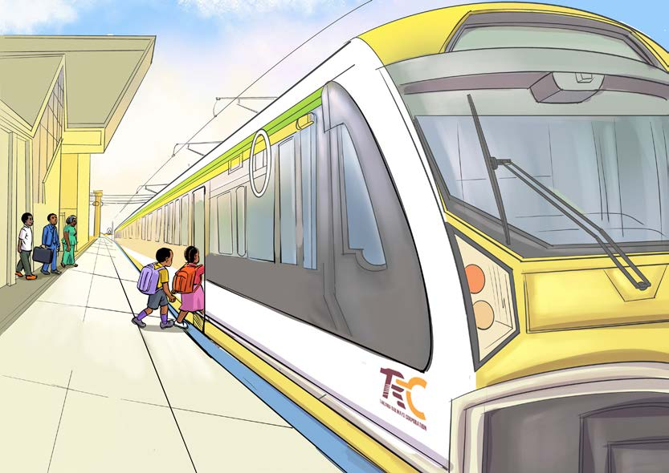

Zoezi la tano
1.Tamka/ tumia tahajia ya vidole silabi za maneno yaliyokozwa wino.
2.Soma maneno yaliyokolezwa wino.
3.Taja maneno mengine yenye herufi kt, pl, ks, bl na st.
4.Mboga gani hulimwa mahali unapoishi?
5.Taja matunda mengine ambayo unayafahamu.
Soma habari hii kwa sauti/ kwa kutumia lugha ya alama, kisha fanya zoezi linalofuata.
Treni ya mwendokasi

Tulipofunga shule, mimi na kaka tulisafiri kwa treni. Tulikwenda kumsalimia Shangazi Stamili ambaye anaishi Dodoma. Siku ya safari, tuliamka alfajiri kujiandaa. Mama alitukumbusha tusipange vitu kwenye mabegi ya plastiki.
69